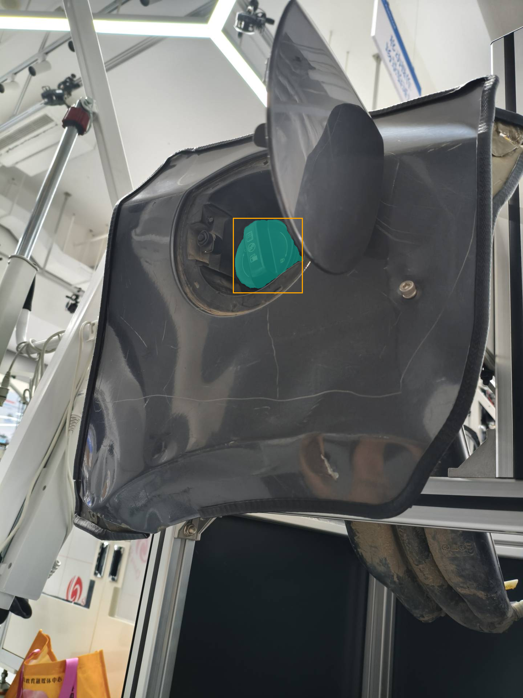
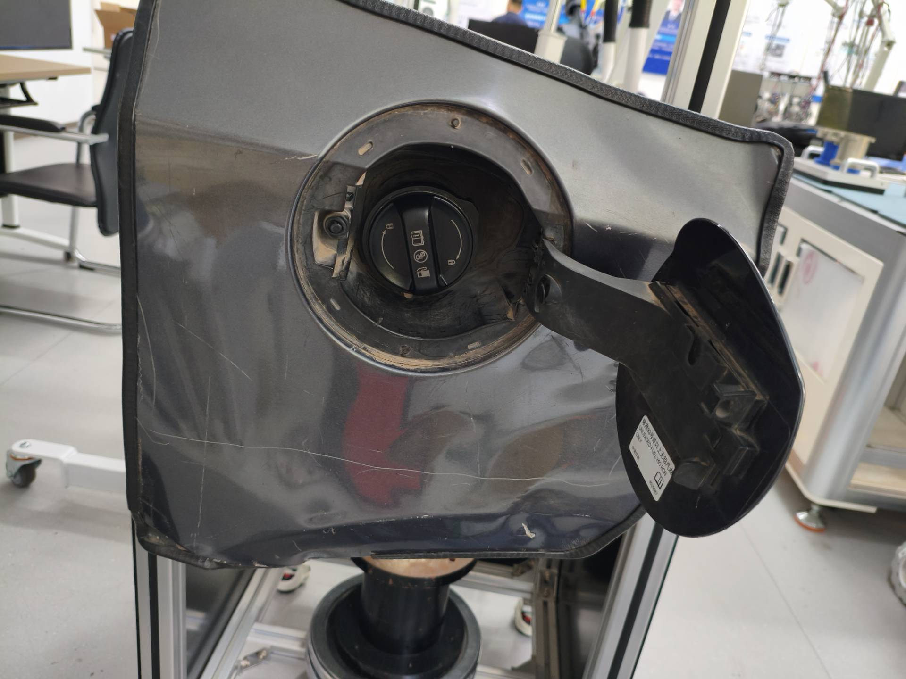
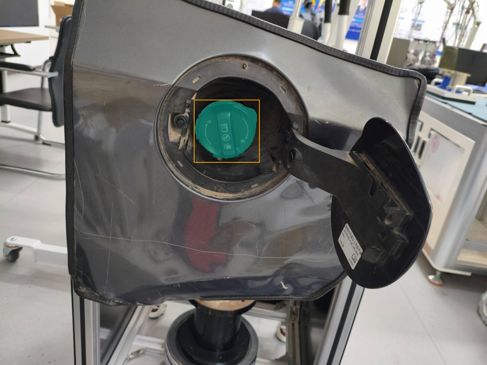
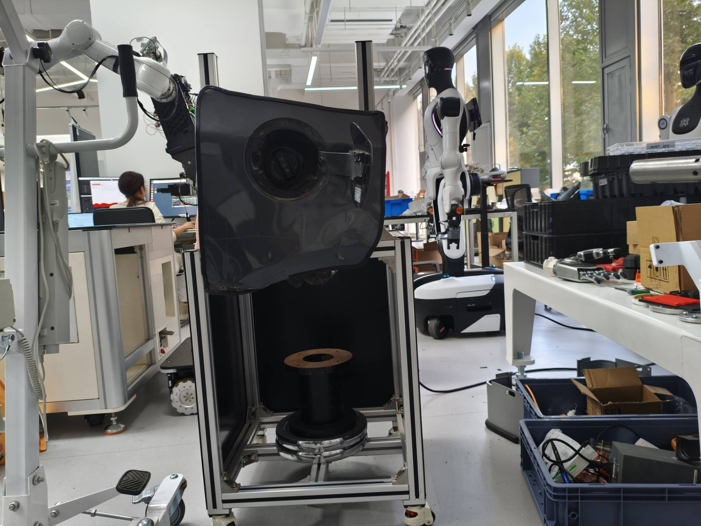
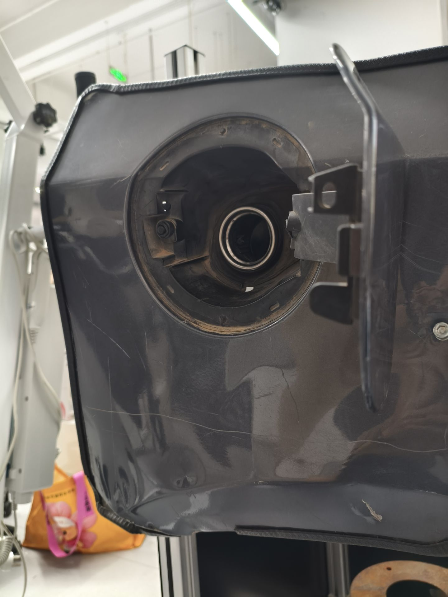

带油箱盖_右下.jpg：unique_candidate
检测分数：[0.7305708527565002]；掩膜质量：[0.9540525078773499]


检测与分割均为本次本机真实执行；检测分数与掩膜质量分别记录。
检测分数：[0.7305708527565002]；掩膜质量：[0.9540525078773499]

检测分数：[0.6723807454109192]；掩膜质量：[0.9624009132385254]


检测分数：[]；掩膜质量：[]


检测分数：[]；掩膜质量：[]
